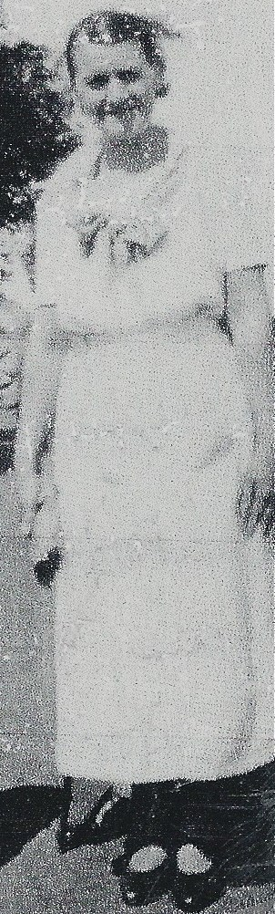
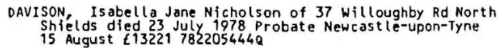
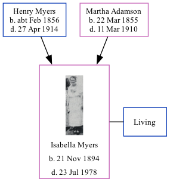

Isabella Jane Nicholson Davison (née Myers) 1894 - 1978
[ Home ] | [ Calendar ] | [ Surnames Index ] | [ Family History ]An agent on commission for debt collecting and the daughter of Henry Myers (a steamboat man) and Martha AdamsonIsabella Myers was born in North Shields, Tyne and Wear, England on Nov 21, 18941,2,3,4,5. She married Edward Davison in Tynemouth, Tyne and Wear, England around May 19427.
Isabella spent all of her life in Tyne and Wear, England. Throughout her life, she lived in several places around the county: at 48 Appleby Street in North Shields on Mar 31, 19011; at Elsdon Street in Tynemouth on Apr 2, 19118; and at 37 Willoughby Road in North Shields on Sep 29, 19395 and in 1978.
She died on Jul 23, 1978 in Newcastle Upon Tyne, Tyne and Wear, England3,6.
Parents
- Henry Briscoe Nicholson was born c. Feb 1856
- Martha Sarah was born on Mar 22, 1855
Citations
- 1901 England, Wales & Scotland Census - Findmypast (was age 6 and the daughter of the head of the household)
- England & Wales births 1837-2006 - Findmypast
- England & Wales deaths 1837-2007 - Findmypast
- ingdom, England;
- 1939 Register - Findmypast (was recorded at this address)
- England & Wales Government Probate Death Index 1960-2019 - Findmypast
- England & Wales Marriages 1837-2005 - Findmypast
- 1911 Census for England & Wales - Findmypast (was age 16 and the sister in law of the head of the household)
Media
Isabella Jane Nicholson Myers

Isabella Jane Nicholson Myers - Probate

England & Wales births 1837-2006 - BMD/B/1894/4/AZ/000407/234
England & Wales marriages 1837-2005 - BMD/M/1942/2/AZ/001021/074
England & Wales deaths 1837-2007 - BMD/D/1978/3/AZ/000243/057
1911 Census For England & Wales - GBC-1911-RG14-30762-0399-6
England & Wales Government Probate Death Index 1960-2019 - GBOR/GOVPROBATE/A/1978-1980/00178288
1939 Register - TNA-R39-2949-2949G-005-20
Family Tree
Generated by ged2site. Last updated on Nov 13, 2024